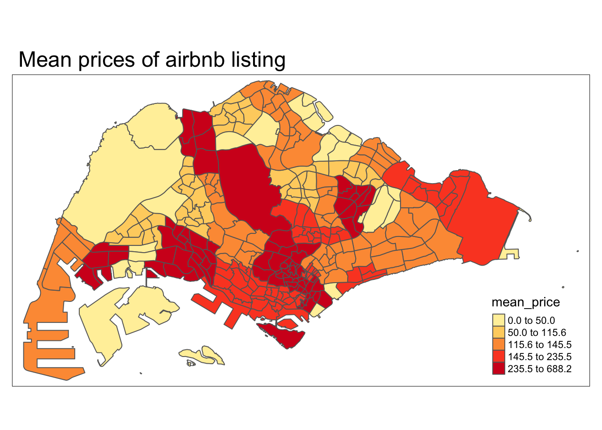
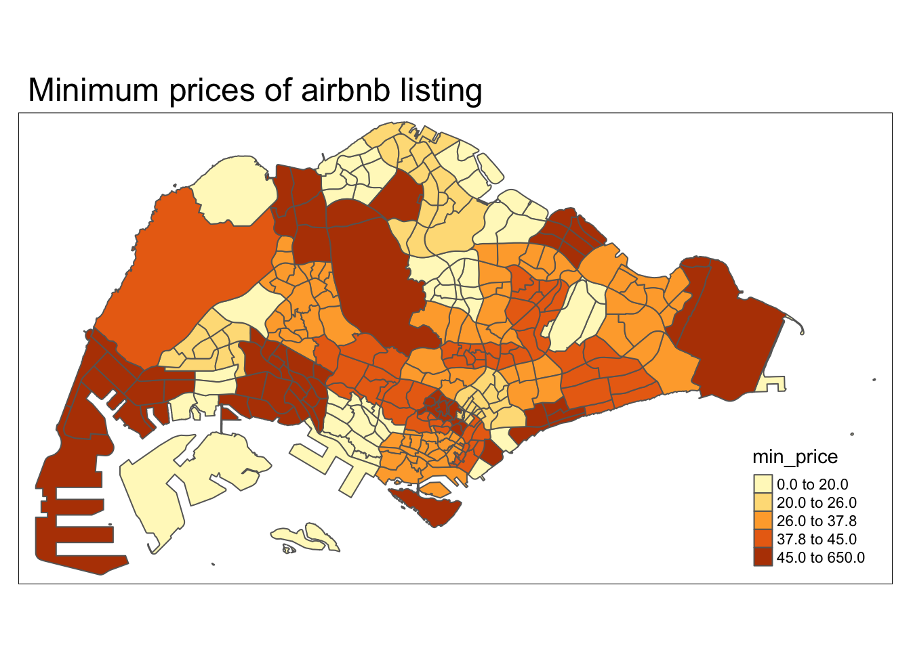
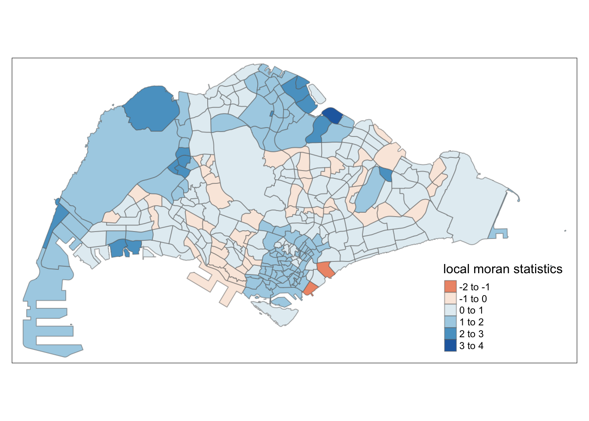
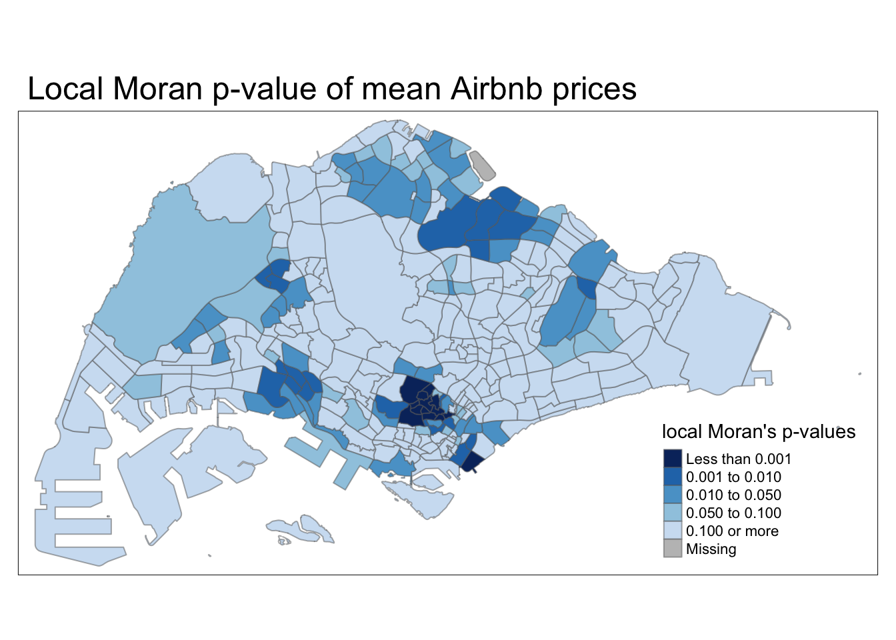
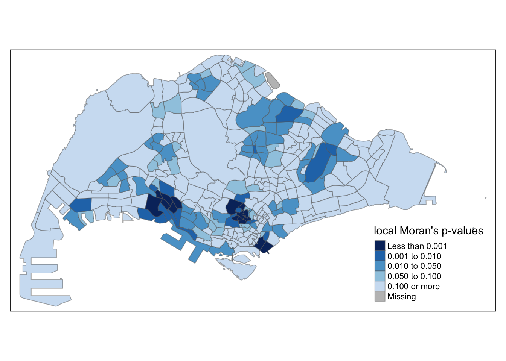
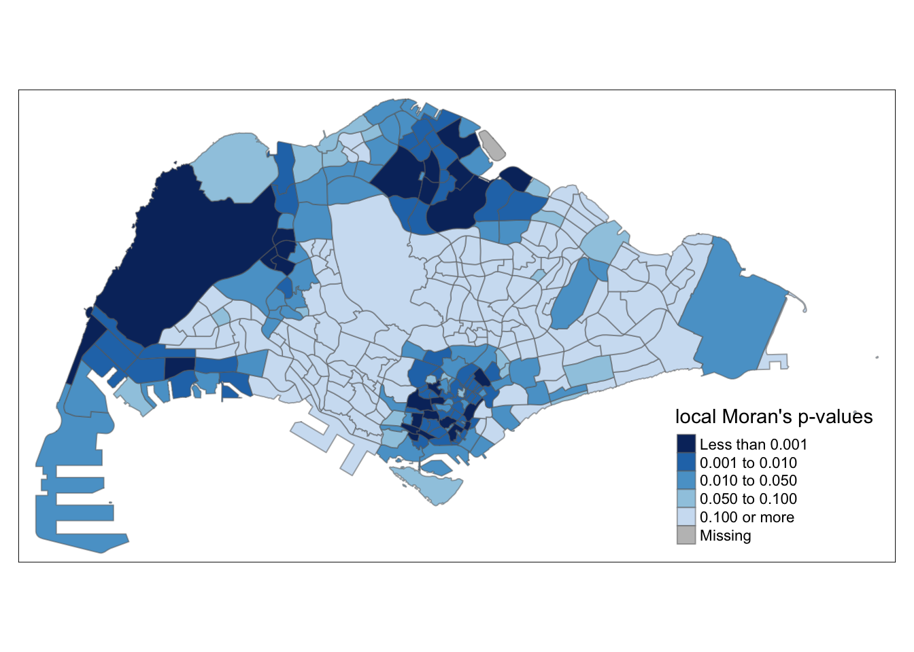
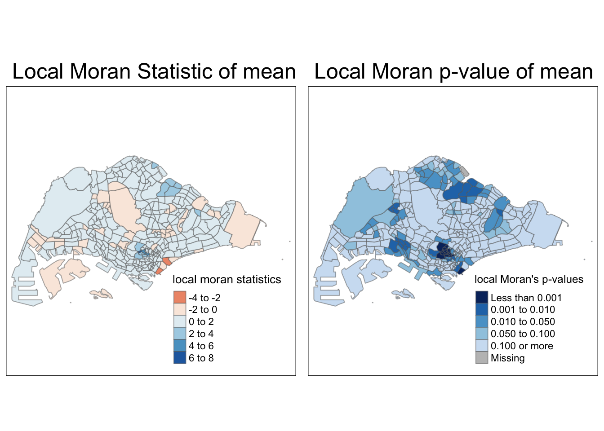
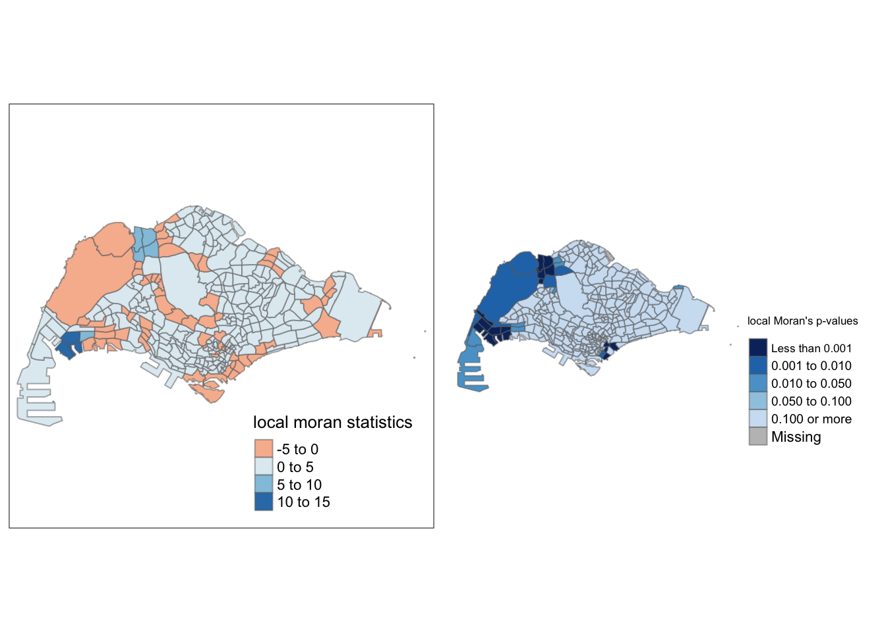
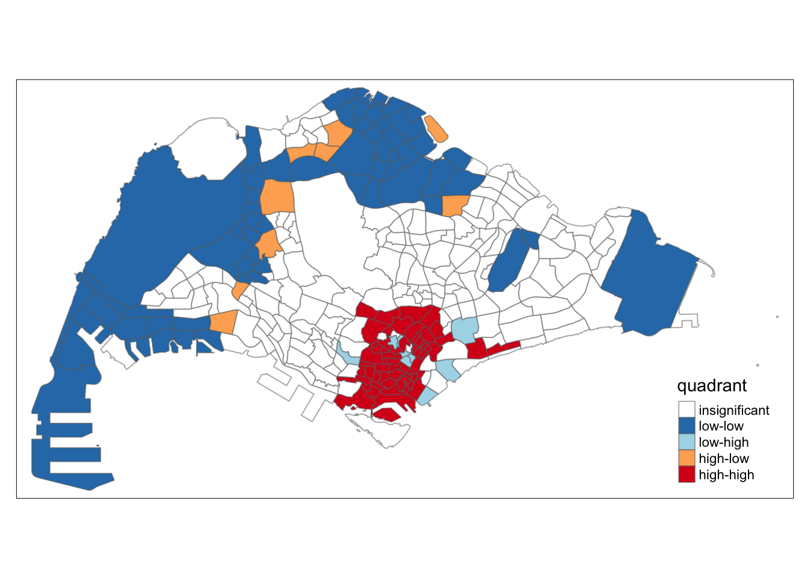

pacman::p_load(tidyverse, sf, tmap, spdep, shiny)Take-home Exercise 3
1. Overview
1.1 The Task
In this take-home exercise, you are required to select one of the module of your proposed Geospatial Analytics Shiny Application and complete the following tasks:
To evaluate and determine the necessary R packages needed for your Shiny application are supported in R CRAN,
To prepare and test the specific R codes can be run and returned the correct output as expected,
To determine the parameters and outputs that will be exposed on the Shiny applications, and
To select the appropriate Shiny UI components for exposing the parameters determine above.
All teams must consult the prototype page of AY2022-2023 January Term Group 3: Tanzania Tourism Analysis. There are three main modules in ths application the are: Exploratory Data Analysis & Confirmatory Data Analysis, Cluster Analysis and Decision Tree Analysis. Each of them were prepared by one of the member of the project team. After that they combined them into the Prototype page of their project website.
Take-home Exercise 3 will be similar to one of the prototype module prepared above in term of content but with the following differences:
You are required to prepare the prototype module report as Take-home Exercise 3 submission. This mean, it has to be published on your own coursework page.
You are required to include a section called UI design for the different components of the UIs for the proposed design.
For storyboarding the UI Design, please consult Storyboard link.
1.2 Submission Instructions
This is an individual assignment. You are required to work on the take-home exercises and prepare submission individually.
The specific submission instructions are as follows:
The write-up of the take-home exercise must be in Quarto html document format. You are required to publish the write-up on Netlify.
Zip the take-home exercise folder and upload it onto eLearn. If the size of the zip file is beyond the capacity of eLearn, you can upload it on SMU OneDrive and provide the download link on eLearn.
2. Setup
2.1 Packages
2.2 Data
Listings.csv consist of detailed Airbnb listing data in Singapore
Master Plan 2019 Sub-zone Boundary (No Sea): This is a geosptial data that has the subzone boundary that divides the map of Singapore
Source: Data.gov.sg https://beta.data.gov.sg/collections/1749/view
2.2.1 Importing data into R environment
listing <- read.csv("data/aspatial/listings.csv")
mpsz <- st_read("data/geospatial", layer = "MP14_SUBZONE_WEB_PL")Reading layer `MP14_SUBZONE_WEB_PL' from data source
`/Users/chuangjinlei/Desktop/JinLei13/IS415-GAA/Take-home_Ex/Take-home_Ex03/data/geospatial'
using driver `ESRI Shapefile'
Simple feature collection with 323 features and 15 fields
Geometry type: MULTIPOLYGON
Dimension: XY
Bounding box: xmin: 2667.538 ymin: 15748.72 xmax: 56396.44 ymax: 50256.33
Projected CRS: SVY212.2.2 Viewing the data
glimpse(listing)Rows: 3,457
Columns: 75
$ id <dbl> 71609, 71896, 71903, 2753…
$ listing_url <chr> "https://www.airbnb.com/r…
$ scrape_id <dbl> 2.023123e+13, 2.023123e+1…
$ last_scraped <chr> "2023-12-27", "2023-12-26…
$ source <chr> "previous scrape", "city …
$ name <chr> "Villa in Singapore · ★4.…
$ description <lgl> NA, NA, NA, NA, NA, NA, N…
$ neighborhood_overview <chr> "", "", "Quiet and view o…
$ picture_url <chr> "https://a0.muscache.com/…
$ host_id <int> 367042, 367042, 367042, 1…
$ host_url <chr> "https://www.airbnb.com/u…
$ host_name <chr> "Belinda", "Belinda", "Be…
$ host_since <chr> "2011-01-29", "2011-01-29…
$ host_location <chr> "Singapore", "Singapore",…
$ host_about <chr> "Hi My name is Belinda -H…
$ host_response_time <chr> "N/A", "N/A", "N/A", "wit…
$ host_response_rate <chr> "N/A", "N/A", "N/A", "100…
$ host_acceptance_rate <chr> "100%", "100%", "100%", "…
$ host_is_superhost <chr> "f", "f", "f", "f", "f", …
$ host_thumbnail_url <chr> "https://a0.muscache.com/…
$ host_picture_url <chr> "https://a0.muscache.com/…
$ host_neighbourhood <chr> "Tampines", "Tampines", "…
$ host_listings_count <int> 5, 5, 5, 51, 51, 5, 7, 51…
$ host_total_listings_count <int> 15, 15, 15, 68, 68, 15, 8…
$ host_verifications <chr> "['email', 'phone']", "['…
$ host_has_profile_pic <chr> "t", "t", "t", "t", "t", …
$ host_identity_verified <chr> "t", "t", "t", "t", "t", …
$ neighbourhood <chr> "", "", "Singapore, Singa…
$ neighbourhood_cleansed <chr> "Tampines", "Tampines", "…
$ neighbourhood_group_cleansed <chr> "East Region", "East Regi…
$ latitude <dbl> 1.34537, 1.34754, 1.34531…
$ longitude <dbl> 103.9589, 103.9596, 103.9…
$ property_type <chr> "Private room in villa", …
$ room_type <chr> "Private room", "Private …
$ accommodates <int> 3, 1, 2, 1, 1, 4, 2, 1, 1…
$ bathrooms <lgl> NA, NA, NA, NA, NA, NA, N…
$ bathrooms_text <chr> "1 private bath", "Shared…
$ bedrooms <lgl> NA, NA, NA, NA, NA, NA, N…
$ beds <int> 3, 1, 2, 1, 1, 5, 1, 1, 1…
$ amenities <chr> "[]", "[]", "[]", "[]", "…
$ price <chr> "$150.00", "$80.00", "$80…
$ minimum_nights <int> 92, 92, 92, 60, 60, 92, 9…
$ maximum_nights <int> 365, 365, 365, 999, 999, …
$ minimum_minimum_nights <int> 92, 92, 92, 60, 60, 92, 9…
$ maximum_minimum_nights <int> 92, 92, 92, 60, 60, 92, 9…
$ minimum_maximum_nights <int> 1125, 1125, 1125, 1125, 1…
$ maximum_maximum_nights <int> 1125, 1125, 1125, 1125, 1…
$ minimum_nights_avg_ntm <dbl> 92, 92, 92, 60, 60, 92, 9…
$ maximum_nights_avg_ntm <dbl> 1125, 1125, 1125, 1125, 1…
$ calendar_updated <lgl> NA, NA, NA, NA, NA, NA, N…
$ has_availability <chr> "t", "t", "t", "t", "t", …
$ availability_30 <int> 30, 30, 30, 6, 6, 29, 30,…
$ availability_60 <int> 34, 60, 60, 6, 6, 33, 60,…
$ availability_90 <int> 55, 90, 90, 6, 6, 54, 90,…
$ availability_365 <int> 55, 91, 91, 183, 183, 54,…
$ calendar_last_scraped <chr> "2023-12-27", "2023-12-26…
$ number_of_reviews <int> 19, 24, 46, 20, 16, 12, 1…
$ number_of_reviews_ltm <int> 0, 0, 0, 0, 3, 0, 0, 1, 2…
$ number_of_reviews_l30d <int> 0, 0, 0, 0, 0, 0, 0, 0, 0…
$ first_review <chr> "2011-12-19", "2011-07-30…
$ last_review <chr> "2020-01-17", "2019-10-13…
$ review_scores_rating <dbl> 4.44, 4.16, 4.41, 4.40, 4…
$ review_scores_accuracy <dbl> 4.37, 4.22, 4.39, 4.16, 4…
$ review_scores_cleanliness <dbl> 4.00, 4.09, 4.52, 4.26, 4…
$ review_scores_checkin <dbl> 4.63, 4.43, 4.63, 4.47, 4…
$ review_scores_communication <dbl> 4.78, 4.43, 4.64, 4.42, 4…
$ review_scores_location <dbl> 4.26, 4.17, 4.50, 4.53, 4…
$ review_scores_value <dbl> 4.32, 4.04, 4.36, 4.63, 4…
$ license <chr> "", "", "", "S0399", "S03…
$ instant_bookable <chr> "f", "f", "f", "t", "t", …
$ calculated_host_listings_count <int> 5, 5, 5, 51, 51, 5, 7, 51…
$ calculated_host_listings_count_entire_homes <int> 0, 0, 0, 0, 0, 0, 1, 0, 0…
$ calculated_host_listings_count_private_rooms <int> 5, 5, 5, 51, 51, 5, 6, 51…
$ calculated_host_listings_count_shared_rooms <int> 0, 0, 0, 0, 0, 0, 0, 0, 0…
$ reviews_per_month <dbl> 0.13, 0.16, 0.30, 0.15, 0…glimpse(mpsz)Rows: 323
Columns: 16
$ OBJECTID <int> 1, 2, 3, 4, 5, 6, 7, 8, 9, 10, 11, 12, 13, 14, 15, 16, 17, …
$ SUBZONE_NO <int> 1, 1, 3, 8, 3, 7, 9, 2, 13, 7, 12, 6, 1, 5, 1, 1, 3, 2, 2, …
$ SUBZONE_N <chr> "MARINA SOUTH", "PEARL'S HILL", "BOAT QUAY", "HENDERSON HIL…
$ SUBZONE_C <chr> "MSSZ01", "OTSZ01", "SRSZ03", "BMSZ08", "BMSZ03", "BMSZ07",…
$ CA_IND <chr> "Y", "Y", "Y", "N", "N", "N", "N", "Y", "N", "N", "N", "N",…
$ PLN_AREA_N <chr> "MARINA SOUTH", "OUTRAM", "SINGAPORE RIVER", "BUKIT MERAH",…
$ PLN_AREA_C <chr> "MS", "OT", "SR", "BM", "BM", "BM", "BM", "SR", "QT", "QT",…
$ REGION_N <chr> "CENTRAL REGION", "CENTRAL REGION", "CENTRAL REGION", "CENT…
$ REGION_C <chr> "CR", "CR", "CR", "CR", "CR", "CR", "CR", "CR", "CR", "CR",…
$ INC_CRC <chr> "5ED7EB253F99252E", "8C7149B9EB32EEFC", "C35FEFF02B13E0E5",…
$ FMEL_UPD_D <date> 2014-12-05, 2014-12-05, 2014-12-05, 2014-12-05, 2014-12-05…
$ X_ADDR <dbl> 31595.84, 28679.06, 29654.96, 26782.83, 26201.96, 25358.82,…
$ Y_ADDR <dbl> 29220.19, 29782.05, 29974.66, 29933.77, 30005.70, 29991.38,…
$ SHAPE_Leng <dbl> 5267.381, 3506.107, 1740.926, 3313.625, 2825.594, 4428.913,…
$ SHAPE_Area <dbl> 1630379.27, 559816.25, 160807.50, 595428.89, 387429.44, 103…
$ geometry <MULTIPOLYGON [m]> MULTIPOLYGON (((31495.56 30..., MULTIPOLYGON (…st_crs(mpsz)Coordinate Reference System:
User input: SVY21
wkt:
PROJCRS["SVY21",
BASEGEOGCRS["SVY21[WGS84]",
DATUM["World Geodetic System 1984",
ELLIPSOID["WGS 84",6378137,298.257223563,
LENGTHUNIT["metre",1]],
ID["EPSG",6326]],
PRIMEM["Greenwich",0,
ANGLEUNIT["Degree",0.0174532925199433]]],
CONVERSION["unnamed",
METHOD["Transverse Mercator",
ID["EPSG",9807]],
PARAMETER["Latitude of natural origin",1.36666666666667,
ANGLEUNIT["Degree",0.0174532925199433],
ID["EPSG",8801]],
PARAMETER["Longitude of natural origin",103.833333333333,
ANGLEUNIT["Degree",0.0174532925199433],
ID["EPSG",8802]],
PARAMETER["Scale factor at natural origin",1,
SCALEUNIT["unity",1],
ID["EPSG",8805]],
PARAMETER["False easting",28001.642,
LENGTHUNIT["metre",1],
ID["EPSG",8806]],
PARAMETER["False northing",38744.572,
LENGTHUNIT["metre",1],
ID["EPSG",8807]]],
CS[Cartesian,2],
AXIS["(E)",east,
ORDER[1],
LENGTHUNIT["metre",1,
ID["EPSG",9001]]],
AXIS["(N)",north,
ORDER[2],
LENGTHUNIT["metre",1,
ID["EPSG",9001]]]]Reveals that the listing data has 3457 observations and 75 variables.
Reveals that the mpsz data has 323 multipolygon spatial features and 16 variables. Furthermore, the coordinate reference system is SVY21 and EPSG code is 9001.
2.2.3 Data Wrangling
- As the listing data has a large number of unnecessary variables, the select() function from dplyr package will be used to only select variables that are of interest and to make the analysis more efficient
- There is a need to remove the dollars signs in the variable price before changing it to a numeric data type
- There is a need to change price to numeric data type so that the variable can be used for calculations
- na.omit() function is used to remove any observations with missing data
listing_clean <- listing |> select(id, neighbourhood_cleansed, neighbourhood_group_cleansed, latitude, longitude, price, property_type, room_type) |> lapply(gsub,pattern="$",fixed=TRUE,replacement="") |> as.data.frame() |> mutate(price = as.numeric(price)) |> na.omit()Removing the outer island from the analysis as there are no airbnb listings there
mpsz_main <- mpsz |> filter(PLN_AREA_N != "SOUTHERN ISLANDS" | PLN_AREA_N != "WESTERN ISLANDS" | PLN_AREA_N != "NORTH-EASTERN ISLANDS")2.2.4 Data Processing
2.2.4.1 Assigning the correct EPSG code
mpsz’s coordinate reference system is SVY21 and EPSG code is 9001.

Information of SVY21 source: https://epsg.io/3414
The coordinate reference system does not seem to match the EPSG code.
Hence, st_set_crs from sf package will be used to input the correct EPSG code.
mpsz_main <- st_set_crs(mpsz_main, 3414)Checking to see if the EPSG code has been updated correctly
st_crs(mpsz_main)Coordinate Reference System:
User input: EPSG:3414
wkt:
PROJCRS["SVY21 / Singapore TM",
BASEGEOGCRS["SVY21",
DATUM["SVY21",
ELLIPSOID["WGS 84",6378137,298.257223563,
LENGTHUNIT["metre",1]]],
PRIMEM["Greenwich",0,
ANGLEUNIT["degree",0.0174532925199433]],
ID["EPSG",4757]],
CONVERSION["Singapore Transverse Mercator",
METHOD["Transverse Mercator",
ID["EPSG",9807]],
PARAMETER["Latitude of natural origin",1.36666666666667,
ANGLEUNIT["degree",0.0174532925199433],
ID["EPSG",8801]],
PARAMETER["Longitude of natural origin",103.833333333333,
ANGLEUNIT["degree",0.0174532925199433],
ID["EPSG",8802]],
PARAMETER["Scale factor at natural origin",1,
SCALEUNIT["unity",1],
ID["EPSG",8805]],
PARAMETER["False easting",28001.642,
LENGTHUNIT["metre",1],
ID["EPSG",8806]],
PARAMETER["False northing",38744.572,
LENGTHUNIT["metre",1],
ID["EPSG",8807]]],
CS[Cartesian,2],
AXIS["northing (N)",north,
ORDER[1],
LENGTHUNIT["metre",1]],
AXIS["easting (E)",east,
ORDER[2],
LENGTHUNIT["metre",1]],
USAGE[
SCOPE["Cadastre, engineering survey, topographic mapping."],
AREA["Singapore - onshore and offshore."],
BBOX[1.13,103.59,1.47,104.07]],
ID["EPSG",3414]]2.2.4.2 Converting values in fields to uppercase
The values in neighbourhood_cleansed and neighbourhood_group_cleansed are not in uppercase while the values in mpsz are in uppercase. Before joining the dataset, it is crucial to ensure that they are in the same case so the value matches.
listing_clean <- listing_clean |> mutate_at(.vars = vars(neighbourhood_cleansed, neighbourhood_group_cleansed), .funs = list(toupper)) 2.2.4.3 Calculating aggregation of prices
Calculating mean, median, maximum and minimum prices for each neighbourhood
group_by() function from the dplyr package is used to group the observations by neightbourhood
summarise_at() function is used to calculate aggregation of prices in each neighbourhood.
mean_price <- listing_clean |>
group_by(neighbourhood_cleansed) |>
summarise_at(vars(price), list(mean_p = mean))
median_price <- listing_clean |>
group_by(neighbourhood_cleansed) |>
summarise_at(vars(price), list(median_p = median))
max_price <- listing_clean |>
group_by(neighbourhood_cleansed) |>
summarise_at(vars(price), list(max_p = max))
min_price <- listing_clean |>
group_by(neighbourhood_cleansed) |>
summarise_at(vars(price), list(min_p = min))2.2.4.4 Combining all aggregation prices into a single dataframe
- Left_join() function is used to combine all data into a single dataframe
aggregate_price <- mean_price |> left_join(max_price) |> left_join(min_price) |> left_join(median_price)2.2.4.5 Performing relational join
This is done to join the attribute data from aggregate_price dataframe to the spatialpolygondataframe of mpsz
airbnb <- mpsz_main |> left_join(aggregate_price, by = c("PLN_AREA_N" = "neighbourhood_cleansed"))
airbnb[is.na(airbnb)] <- 03.Visualizing aggregated price indicators by planning subzone
mean <- tm_shape(airbnb) +
tm_fill("mean_p", n = 5, style = "quantile") +
tm_borders() +
tm_layout(main.title = "Mean prices of airbnb listing")
median <- tm_shape(airbnb) +
tm_fill("median_p", n = 5, style = "quantile") +
tm_borders() +
tm_layout(main.title = "Median prices of airbnb listing")
max <- tm_shape(airbnb) +
tm_fill("max_p", n = 5, style = "quantile") +
tm_borders() +
tm_layout(main.title = "Max prices of airbnb listing")
min <- tm_shape(airbnb) +
tm_fill("min_p", n = 5, style = "quantile") +
tm_borders() +
tm_layout(main.title = "Minimum prices of airbnb listing")
mean 
medianmaxmin
4. Performing local measure of spatial autocorrelation
4.1 Computing contiguity spatial weights
wm_q <- poly2nb(airbnb, queen = TRUE)
summary(wm_q)Neighbour list object:
Number of regions: 323
Number of nonzero links: 1934
Percentage nonzero weights: 1.853751
Average number of links: 5.987616
5 regions with no links:
17 18 19 295 302
6 disjoint connected subgraphs
Link number distribution:
0 1 2 3 4 5 6 7 8 9 10 11 12 14 17
5 2 6 10 26 77 87 51 34 16 3 3 1 1 1
2 least connected regions:
16 234 with 1 link
1 most connected region:
313 with 17 linksAssigning equal weights to each neighbouring polygon
rswm_q <- nb2listw(wm_q,
style="W",
zero.policy = TRUE)
rswm_qCharacteristics of weights list object:
Neighbour list object:
Number of regions: 323
Number of nonzero links: 1934
Percentage nonzero weights: 1.853751
Average number of links: 5.987616
5 regions with no links:
17 18 19 295 302
6 disjoint connected subgraphs
Weights style: W
Weights constants summary:
n nn S0 S1 S2
W 318 101124 318 111.2781 1309.8754.2 Computing local Moran’s I
localMI_mean <- localmoran(airbnb$mean_p, rswm_q)
localMI_median <- localmoran(airbnb$median_p, rswm_q)
localMI_max <- localmoran(airbnb$max_p, rswm_q)
localMI_min <- localmoran(airbnb$min_p, rswm_q)4.3 Mapping the Local Moran’s I statistic
The local moran’s I dataframe have to be appended onto the mpsz spatialpolygondataframe before they can be mapped
airbnb.localMI_mean <- cbind(mpsz_main, localMI_mean) |>
rename(Pr.Ii = Pr.z....E.Ii..)
airbnb.localMI_median <- cbind(mpsz_main, localMI_median) |>
rename(Pr.Ii = Pr.z....E.Ii..)
airbnb.localMI_max <- cbind(mpsz_main, localMI_max) |>
rename(Pr.Ii = Pr.z....E.Ii..)
airbnb.localMI_min <- cbind(mpsz_main, localMI_min) |>
rename(Pr.Ii = Pr.z....E.Ii..)4.3.1 Mapping Local Moran’s I values
map_i_mean <- tm_shape(airbnb.localMI_mean) +
tm_fill(col = "Ii",
style = "pretty",
palette = "RdBu",
title = "local moran statistics") +
tm_borders(alpha = 0.5)
map_i_meanmap_i_median <- tm_shape(airbnb.localMI_median) +
tm_fill(col = "Ii",
style = "pretty",
palette = "RdBu",
title = "local moran statistics") +
tm_borders(alpha = 0.5)
map_i_medianmap_i_max <- tm_shape(airbnb.localMI_max) +
tm_fill(col = "Ii",
style = "pretty",
palette = "RdBu",
title = "local moran statistics") +
tm_borders(alpha = 0.5)
map_i_max
map_i_min <- tm_shape(airbnb.localMI_min) +
tm_fill(col = "Ii",
style = "pretty",
palette = "RdBu",
title = "local moran statistics") +
tm_borders(alpha = 0.5)
map_i_min4.3.2 Mapping local Moran’s I p-values
map_pval_mean <- tm_shape(airbnb.localMI_mean) +
tm_fill(col = "Pr.Ii",
breaks=c(-Inf, 0.001, 0.01, 0.05, 0.1, Inf),
palette="-Blues",
title = "local Moran's I p-values") +
tm_borders(alpha = 0.5)
map_pval_mean
map_pval_median <- tm_shape(airbnb.localMI_median) +
tm_fill(col = "Pr.Ii",
breaks=c(-Inf, 0.001, 0.01, 0.05, 0.1, Inf),
palette="-Blues",
title = "local Moran's I p-values") +
tm_borders(alpha = 0.5)
map_pval_median
map_pval_max <- tm_shape(airbnb.localMI_max) +
tm_fill(col = "Pr.Ii",
breaks=c(-Inf, 0.001, 0.01, 0.05, 0.1, Inf),
palette="-Blues",
title = "local Moran's I p-values") +
tm_borders(alpha = 0.5)
map_pval_max
map_pval_min <- tm_shape(airbnb.localMI_min) +
tm_fill(col = "Pr.Ii",
breaks=c(-Inf, 0.001, 0.01, 0.05, 0.1, Inf),
palette="-Blues",
title = "local Moran's I p-values") +
tm_borders(alpha = 0.5)
map_pval_min4. Mapping both local Moran’s I values and p-values
tmap_arrange(map_i_mean, map_pval_mean, asp = 1, ncol = 2)
tmap_arrange(map_i_median, map_pval_median, asp = 1, ncol = 2)tmap_arrange(map_i_max, map_pval_max, asp = 1, ncol = 2)tmap_arrange(map_i_min, map_pval_min, asp = 1, ncol = 2)
5 Creating a LISA Cluster Map
5.1 Plotting Moran Scatterplot
sp_mean <- moran.plot(airbnb$mean_p, rswm_q,
labels = as.character(airbnb$SUBZONE_N),
xlab = "mean price",
ylab = "Spatially Lag mean price")5.2 Preparing LISA map classes
quadrant <- vector(mode = "numeric", length = nrow(localMI_mean))
quadrant2 <- vector(mode = "numeric", length = nrow(localMI_median))
quadrant3 <- vector(mode = "numeric", length = nrow(localMI_max))
quadrant4 <- vector(mode = "numeric", length = nrow(localMI_min))Deriving spatially lagged mean price and centering the laggged mean prices around its mean
airbnb$lag_mean_p <- lag.listw(rswm_q, airbnb$mean_p)
DV_mean <- airbnb$lag_mean_p - mean(airbnb$lag_mean_p)
airbnb$lag_median_p <- lag.listw(rswm_q, airbnb$median_p)
DV_median <- airbnb$lag_median_p - mean(airbnb$lag_median_p)
airbnb$lag_max_p <- lag.listw(rswm_q, airbnb$max_p)
DV_max <- airbnb$lag_max_p - mean(airbnb$lag_max_p)
airbnb$lag_min_p <- lag.listw(rswm_q, airbnb$min_p)
DV_min <- airbnb$lag_min_p - mean(airbnb$lag_min_p)Centering the Local Moran’s I around their mean
lm_i_mean <- localMI_mean[,1] - mean(localMI_mean[,1])
lm_i_median <- localMI_median[,1] - mean(localMI_median[,1])
lm_i_max <- localMI_max[,1] - mean(localMI_max[,1])
lm_i_min <- localMI_min[,1] - mean(localMI_min[,1])Defining the four categories
quadrant[DV_mean <0 & lm_i_mean>0] <- 1
quadrant[DV_mean >0 & lm_i_mean<0] <- 2
quadrant[DV_mean <0 & lm_i_mean<0] <- 3
quadrant[DV_mean >0 & lm_i_mean>0] <- 4
quadrant2[DV_median <0 & lm_i_median>0] <- 1
quadrant2[DV_median >0 & lm_i_median<0] <- 2
quadrant2[DV_median <0 & lm_i_median<0] <- 3
quadrant2[DV_median >0 & lm_i_median>0] <- 4
quadrant3[DV_max <0 & lm_i_max>0] <- 1
quadrant3[DV_max >0 & lm_i_max<0] <- 2
quadrant3[DV_max <0 & lm_i_max<0] <- 3
quadrant3[DV_max >0 & lm_i_max>0] <- 4
quadrant4[DV_min <0 & lm_i_min>0] <- 1
quadrant4[DV_min >0 & lm_i_min<0] <- 2
quadrant4[DV_min <0 & lm_i_min<0] <- 3
quadrant4[DV_min >0 & lm_i_min>0] <- 4 5.3 Plotting LISA map
airbnb.localMI_mean$quadrant <- quadrant
colors <- c("#ffffff", "#2c7bb6", "#abd9e9", "#fdae61", "#d7191c")
clusters <- c("insignificant", "low-low", "low-high", "high-low", "high-high")
lisa_mean <- tm_shape(airbnb.localMI_mean) +
tm_fill(col = "quadrant",
style = "cat",
palette = colors[c(sort(unique(quadrant)))+1],
labels = clusters[c(sort(unique(quadrant)))+1],
popup.vars = c("")) +
tm_view(set.zoom.limits = c(11,17)) +
tm_borders(alpha=0.5)
lisa_meanairbnb.localMI_median$quadrant <- quadrant2
lisa_median <- tm_shape(airbnb.localMI_median) +
tm_fill(col = "quadrant",
style = "cat",
palette = colors[c(sort(unique(quadrant)))+1],
labels = clusters[c(sort(unique(quadrant)))+1],
popup.vars = c("")) +
tm_view(set.zoom.limits = c(11,17)) +
tm_borders(alpha=0.5)
lisa_medianairbnb.localMI_max$quadrant <- quadrant3
lisa_max <- tm_shape(airbnb.localMI_max) +
tm_fill(col = "quadrant",
style = "cat",
palette = colors[c(sort(unique(quadrant)))+1],
labels = clusters[c(sort(unique(quadrant)))+1],
popup.vars = c("")) +
tm_view(set.zoom.limits = c(11,17)) +
tm_borders(alpha=0.5)
lisa_max
airbnb.localMI_min$quadrant <- quadrant4
lisa_min <- tm_shape(airbnb.localMI_min) +
tm_fill(col = "quadrant",
style = "cat",
palette = colors[c(sort(unique(quadrant)))+1],
labels = clusters[c(sort(unique(quadrant)))+1],
popup.vars = c("")) +
tm_view(set.zoom.limits = c(11,17)) +
tm_borders(alpha=0.5)
lisa_min5.4 Plotting both mean prices and lisa map
tmap_arrange(mean, lisa_mean, asp = 1, ncol = 2)
6. UI Design

- selectInput(inputId = “method”, label = “Aggregation Method”, choices = list(“Mean Price” = “mean”, “Median Price” = “median”, “Max Price” = “max”, “Minimum Price” = “min”)
- selectInput(inputId = “map”, label = “Plots to display”, choices = list(“Local Moran I Statistic plot” = “MI”, “Local Moran I p-value plot” = “p-value”, “LISA plot” = “lisa”)